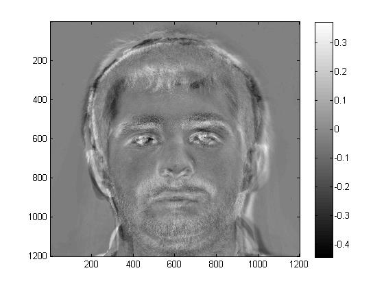
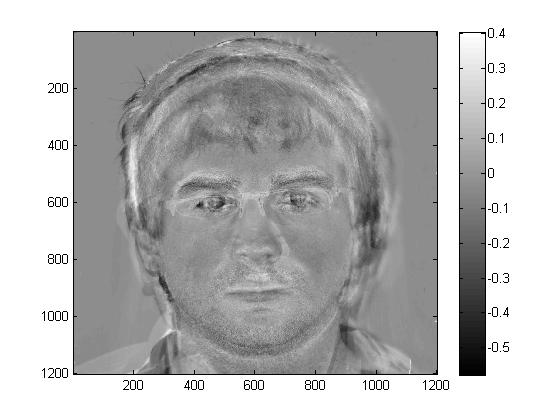
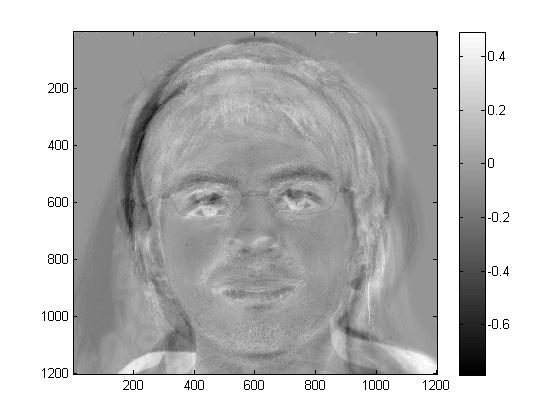

Principal Component Analysis (PCA)
Principal Component Analysis is a process that a data set expressed in M-dimensional space is reduced to a K dimensional space, where the K dimensions computed represent the K-axis subspace of the original data set which accounts for as much of the variation in the data set as possible.
PCA is necessary to be used in face morphing porcess because an image of a face with pixel dimensions (W x H) has W*H degrees of freedom (every pixel can vary its color independent of every other). Thus without PCA, for the 1200*1200 images we used in this project (after I re-aligned and cropped the input images, the size is 1200 by 1200), calculations in 1440,000 dimensional space would be required.
By using PCA, this 1440,000 dimensional space can be reduced to an arbitrarily small (and therefore much easy to computet) coordinate space, with each of the resulting axes expressing the most important aspects of face-ness (thus the term principal component analysis).
Results
1. Before computing the PCA, the major problem with the data set was the variation in face location and size between images. This variation could be cased by camera position or camera zoom. The differences can be seen as following:
Examples of Image Variation |
Analysis |
1. Different Face Location 2. Different Face Size |
This causes the computed face space (PCA) to become messed with false facial differences, which should be the differnces between each input image and the average image, instead of only computing true face variance. The overall result of this turned out to be a barrel distortion effect on the images, and the first eigenvalue returned from these images was the degree of the barrel distortion.
2. My solution was to correct the input images before computing PCA by attempting to apply a rough re-aligning heuristic. My algorithm was based on the 43 correspondence pairs of points provided by the '.txt' files and computed the mean points. Then I employed the correspondence points of each source image againts the average points to generate a homographies matrix for each input image using Leat Squates Method as measurement. The homographies controls the 2D translation, rotation, and/or scaling transformation. Finally, I applied this transformation to the control points of the image for the purposes of PCA calculations and interpolation.
The results of the corrected images can be seen below:
Corrected Image A |
Original Image A |
Corrected Image B |
Original Image B |
.jpg) |
.jpg) |
.jpg) |
.jpg) |
Corrected Image C |
Original Image C |
Corrected Image D |
Original Image D |
.jpg) |
.jpg) |
.jpg) |
.jpg) |
3. Below are the top 15 appearance eigenvalues for our 17 face pool.
|  |  | |||
|  | ||||